第9章 集成电路
集成电路是高度集成化的电子器件，具有集成度高、功能完整、可靠性好、体积小、重量轻、功耗低的特点，已成为现代电子技术中不可或缺的核心器件。
集成电路可分为模拟集成电路和数字集成电路两大类，包括集成运放、时基集成电路、集成稳压器、门电路、触发器、计数器、译码器和移位寄存器等。
9.1 集成运放
要点提示
集成运放是集成运算放大器的简称，它是一种集成化的、高增益的多级直接耦合放大器，包括单运放、双运放和四运放。
集成运放的文字符号为“IC”。
集成运放的参数主要有电源电压范围、最大允许功耗、单位增益带宽、转换速率和输入阻抗等。
集成运放的各种运用均基于反相放大器、同相放大器和差动放大器这3种基本放大电路。
集成运放的主要作用是放大和阻抗变换，在各种放大、振荡、有源滤波、精密整流以及运算电路中得到广泛的应用。
集成运算放大器简称集成运放，是一种集成化的、高增益的多级直接耦合放大器，具有输入阻抗高、增益大、稳定性好、通用性强、适用范围宽和使用简便的特点，并且有很多品种可供选择，在放大、振荡、电压比较、阻抗变换、模拟运算和有源滤波等各种电子电路中得到了越来越广泛的应用。
集成运放品种繁多，按类型可分为通用型运放、低功耗运放、高阻运放、高精度运放、高速运放、宽带运放、低噪声运放、高压运放，以及程控型、电流型、跨导型运放等。根据一个集成电路封装内包含运放单元的数量，集成运放又可分为单运放、双运放和四运放。
集成运放有金属圆壳封装、金属菱形封装、陶瓷扁平式封装、双列直插式封装等形式，如图9-1所示。较常用的是双列直插式封装的集成运放。
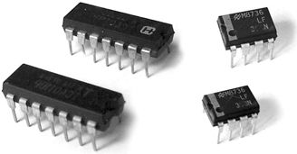
图9-1 集成运放
集成运放的文字符号为“IC”，其图形符号如图9-2所示。集成运放一般具有两个输入端，即同相输入端 U + 和反相输入端U − ；具有一个输出端U o 。
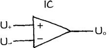
图9-2 集成运放的图形符号
集成运放的参数很多，主要有电源电压范围、最大允许功耗P M 、单位增益带宽f C 、转换速率SR和输入阻抗Z i 等。
1．电源电压范围
电源电压范围是指集成运放正常工作所需要的直流电源电压的范围。通常集成运放需要对称的正、负双电源供电，也有部分集成运放可以在单电源情况下工作，如图9-3所示。
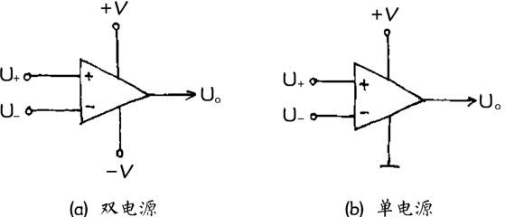
图9-3 集成运放的电源
2．最大允许功耗
最大允许功耗 P M 是指集成运放正常工作情况下所能承受的最大耗散功率。使用中不应使集成运放的功耗超过P M 。
3．单位增益带宽
单位增益带宽 f C 是指集成运放开环电压放大倍数 A=1（0dB）时所对应的频率，如图9-4所示。一般通用型运放f C 约为1MHz，宽带和高速运放f C 可达10MHz以上，应根据需要选用。
4．转换速率
转换速率SR是指在额定负载条件下，当输入边沿陡峭的大阶跃信号时，集成运放输出电压的单位时间最大变化率（单位为V/μs），即输出电压边沿的斜率，如图9-5所示。在高保真音响设备中，选用单位增益带宽f C 和转换速率SR指标高的集成运放效果较好。
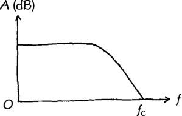
图9-4 单位增益带宽的定义
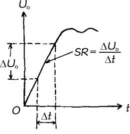
图9-5 转换速率的定义
5．输入阻抗
输入阻抗Z i 是指集成运放工作于线性区时，输入电压变化量与输入电流变化量的比值。采用双极型晶体管作输入级的集成运放，其输入阻抗Z i 通常为数兆欧；采用场效应管作输入级的集成运放，其输入阻抗Z i 可高达10 12 Ω。
集成运放内部电路结构如图 9-6 所示，由高阻抗输入级、中间放大级、低阻抗输出级和偏置电路等组成。
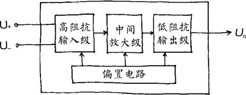
图9-6 集成运放内部电路结构
输入信号由同相输入端U + 或反相输入端U − 输入，经中间放大级放大后，通过低阻抗输出级输出。中间放大级由若干级直接耦合放大器组成，提供极大的开环电压增益（100dB 以上）。偏置电路为各级提供合适的工作点。
集成运放的各种运用均基于3种基本放大电路，即反相放大器、同相放大器和差动放大器。
1．反相放大器
反相放大器基本电路如图9-7所示。其中，R f 为反馈电阻， R 1 为输入电阻。由于集成运放开环电压放大倍数极大，因此其闭环放大倍数
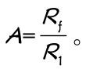
输入电压 U i 由反相输入端输入，其输出电压U o 与输入电压U i 相位相反，即U o =-AU i 。2．同相放大器
同相放大器基本电路如图9-8所示。其中，R f 为反馈电阻， R 1 为输入电阻，其闭环放大倍数
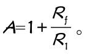
输入电压U i 由同相输入端输入，其输出电压U o 与输入电压U i 相位相同，即U o =AU i 。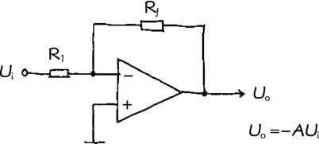
图9-7 反相放大器
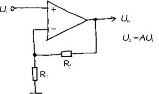
图9-8 同相放大器
3．差动放大器
差动放大器基本电路如图9-9所示。它用来放大两个输入电压U 1 与U 2 的差值，其闭环放大倍数
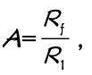
输出电压U o =A（U 2 -U 1 ）。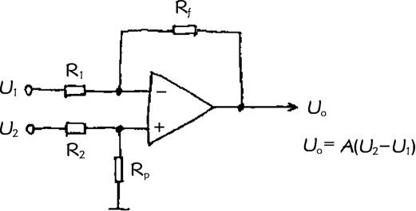
图9-9 差动放大器
集成运放的主要作用是放大和阻抗变换，在各种放大、振荡、有源滤波、精密整流以及运算电路中得到广泛的应用。
1．电压放大
集成运放电压放大器应用实例如图9-10所示。这是一个传声器放大器，驻极体传声器BM输出的微弱电压信号经耦合电容C 1 输入集成运放IC，放大后的电压信号经C 3 耦合输出。电压放大倍数由集成运放外接电阻R 4 、R 3 的大小决定，该电路放大倍数A =100 倍（40dB）。
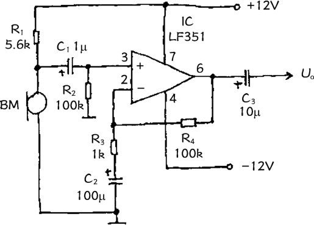
图9-10 传声器放大器
2．频率补偿放大
图9-11所示为集成运放应用于磁头放大器。由于磁头输出电压随信号频率升高而增大，因此磁头放大器必须具有频率补偿功能。R 2 、R 3 、R 4 、C 4 组成频率补偿网络，作为集成运放 IC 的负反馈回路，使其放大倍数在中频段（f 1 ～f 2 之间）具有6dB/oct （倍频程）的衰减。
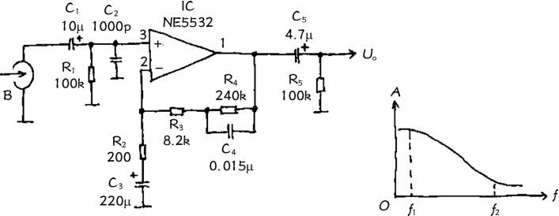
图9-11 磁头放大器
3．阻抗变换
同相放大器电路中，当R f =0、R 1 =∞时，便构成了电压跟随器，如图9-12所示。这是同相放大器的一个特例，其电压放大倍数A=1，输出电压U o 与输入电压U i 大小相等、相位相同。集成运放电压跟随器具有极高的输入阻抗和很小的输出阻抗，常用作阻抗变换器。
4．振荡电路
集成运放可以应用于振荡电路。图 9-13 所示为采用集成运放的 800Hz 文氏桥式正弦波振荡器。R 1 、C 1 和 R 2 、C 2 构成正反馈回路，并具有选频作用，使电路产生单一频率的振荡。R 3 、R 4 、R 5 等构成负反馈回路，以控制集成运放IC的闭环增益，并利用并联在 R 5 上的二极管 VD 1 、VD 2 的钳位作用进一步稳定振幅。
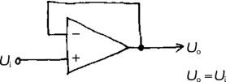
图9-12 电压跟随器
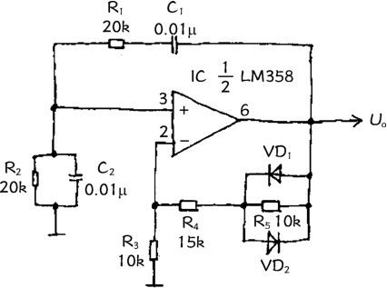
图9-13 正弦波振荡器
5．有源滤波器
用集成运放可以方便地构成有源滤波器，包括低通滤波器、高通滤波器、带通滤波器等。图9-14所示为前级二分频电路，分频点为800Hz。集成运放IC 1 等构成二阶高通滤波器， IC 2 等构成二阶低通滤波器，将来自前置放大器的全音频信号分频后分别送入两个功率放大器，然后分别推动高音扬声器和低音扬声器。
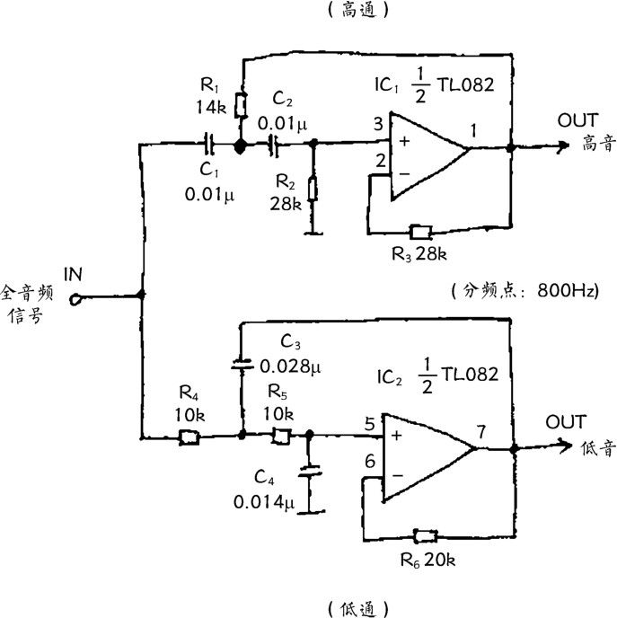
图9-14 前级二分频电路
6．精密整流
集成运放还可以用于精密整流电路。图 9-15 所示为10mV 有源交流电压表电路。这是一个精密全波整流电路，微安表头PA接在整流桥的对角线上。集成运放IC的高增益和高输入阻抗，消除了整流二极管的非线性影响，提高了测量精度。
7．运算电路
（1）加法运算。图9-16所示为加法器电路。集成运放构成反相放大器，U 1 、U 2 为相加电压，U o 为和电压。当取R 1 =R 2 =R f 时，A=1，输出电压 U o =-(U 1 +U 2 )，实现了加法运算。图 9-16中的R p 为平衡电阻，用于平衡输入偏置电流造成的失调。
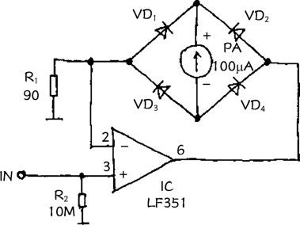
图9-15 精密整流电路
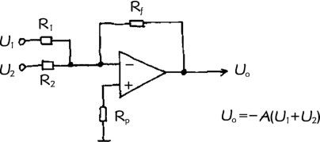
图9-16 加法器电路
（2）减法运算。前述图 9-9 所示差动放大器电路，实际上是一个减法器电路，U 1 为减数电压，U 2 为被减数电压，U o 为差电压。当取R 1 =R 2 =R f 时，A=1，输出电压U o =U 2 -U 1 ，实现了减法运算。图中的R p 为平衡电阻。
9.2 时基集成电路
要点提示
时基集成电路简称时基电路，是一种能产生时间基准和完成各种定时或延时功能的非线性模拟集成电路。
时基集成电路有单时基集成电路、双时基集成电路、双极型时基集成电路和CMOS型时基集成电路等种类。
时基集成电路的文字符号为“IC”。
时基集成电路的参数主要是电源电压、输出电流、放电电流、额定功耗和频率范围等。
时基集成电路主要有单稳态、无稳态、双稳态和施密特4种典型工作模式。
时基集成电路的主要作用是定时、振荡和整形，广泛应用在延时/定时、多谐振荡、脉冲检测、波形发生与整形、电平转换和自动控制等领域。
时基集成电路简称时基电路，是一种能产生时间基准和完成各种定时或延时功能的非线性模拟集成电路，能够为电子系统提供时间基准信号，以实现时间或时序上的控制，广泛应用在信号发生、波形处理、定时/延时、仪器仪表、控制系统和电子玩具等领域。
时基集成电路是一种将模拟电路和数字电路结合在一起的非线性集成电路，包括单时基集成电路、双时基集成电路、双极型时基集成电路、CMOS型时基集成电路等种类，如图9-17所示。
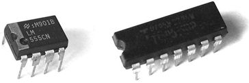
图9-17 时基集成电路
时基集成电路的封装形式主要有金属外壳封装和双列直插式封装。单时基集成电路的一个封装中只含有一个时基电路单元。双时基集成电路的一个封装中含有两个时基电路单元。
单、双时基集成电路又都可分为双极型时基集成电路和CMOS型时基集成电路两类。双极型时基集成电路输出电流大，驱动能力强，可直接驱动200mA以内的负载。CMOS型时基集成电路功耗低，输入阻抗高，更适合作长延时电路。
时基集成电路的文字符号为“IC”，图形符号如图 9-18所示。
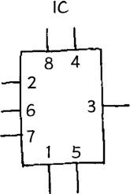
图9-18 时基集成电路的图形符号
时基集成电路的参数很多，主要参数有电源电压V CC 、输出电流I om 、放电电流I D 、额定功耗P CM 和频率范围等。双极型时基集成电路和CMOS型时基集成电路的主要参数有所不同，见表9-1。一般使用时只需要考虑其主要参数即可。
表9-1 时基集成电路的主要参数
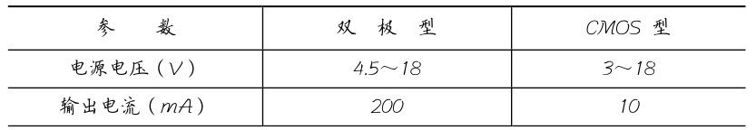
续表
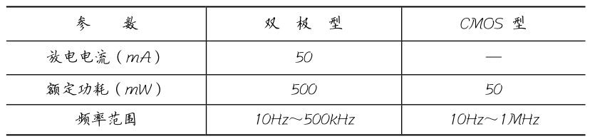
1．电源电压
电源电压V CC 是指时基集成电路正常工作所需的直流工作电压，CMOS型时基集成电路比双极型时基集成电路的电源电压范围略宽。
2．输出电流
输出电流I om 是指时基集成电路输出端所能提供的最大电流。双极型时基集成电路具有较大的输出电流。
3．放电电流
放电电流I D 是指时基集成电路放电端所能通过的最大电流。
4．频率范围
频率范围是指时基集成电路工作于无稳态模式时的振荡频率范围。CMOS型时基集成电路比双极型时基集成电路的最高振荡频率略高。
时基集成电路将模拟电路与数字电路巧妙地结合在一起，从而可实现多种用途。图9-19所示为时基集成电路内部电路。其中，电阻R 1 、R 2 、R 3 组成分压网络，为A 1 、A 2 两个电压比较器提供
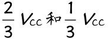
的基准电压。两个比较器的输出分别作为RS触发器的置“0”信号和置“1”信号。输出驱动级和放电管VT受 RS 触发器控制。由于分压网络的 3 个电阻 R 1 、R 2 、R 3 均为5kΩ，所以该集成电路又称为555时基集成电路。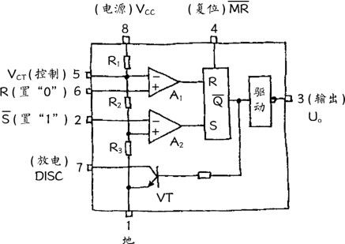
图9-19 时基集成电路内部电路
单时基集成电路一般为8脚双列直插式封装。②脚为置“1”端
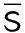
，当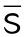
端电压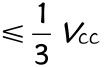
时电路输出端U o 为“1”。⑥脚为置“0”端R，当R端电压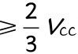
时电路输出端U o 为“0”。③脚为输出端U o ，输出端与输入端为反相关系。⑦脚为放电端，当U o =0时⑦脚导通。④脚为复位端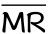
，当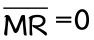
时，U o =0。双时基集成电路一般为14脚双列直插式封装。时基集成电路各引脚功能见表9-2。
表9-2 时基集成电路的引脚功能
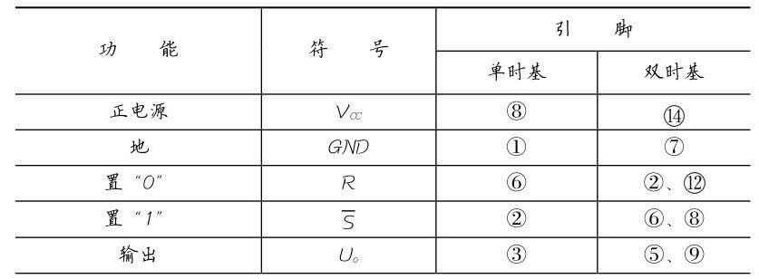
续表
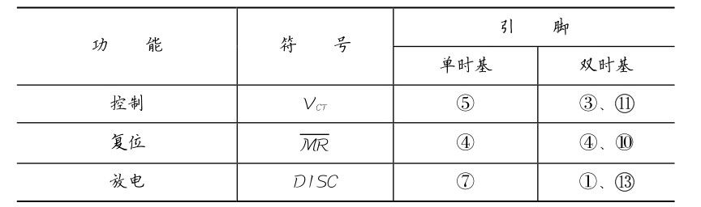
时基集成电路工作原理是：当置“0”输入端R的电压
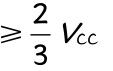
时（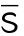
端电压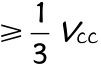
），上限比较器 A 1 输出为“1”，使电路输出端U o 为“0”，放电管VT导通，DISC端为“0”。当置“1”输入端
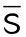
的电压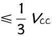
时（R端电压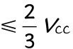
），下限比较器 A 2 输出为“1”，使电路输出端 U o 为“1”，放电管VT截止，DISC端为“1”。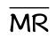
为复位端，当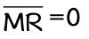
时，U o =0，DISC=0。电路逻辑真值表见表9-3。表9-3 时基集成电路逻辑真值表
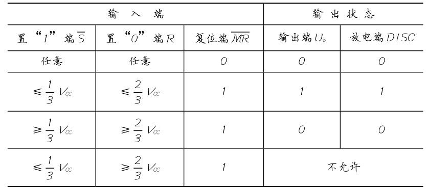
时基集成电路可以构成单稳态、无稳态、双稳态和施密特4种典型工作模式。
1．单稳态工作模式
单稳态工作模式常用于定时电路和延时电路，是应用较多的工作模式，典型电路如图9-20所示。电阻R和电容C组成定时电路，时基集成电路的②脚为触发端。
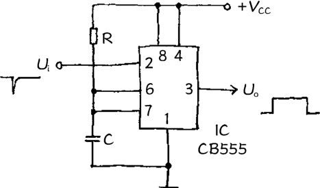
图9-20 单稳态电路
平时电路处于稳态，时基集成电路输出端（③脚）U o =0，放电端（⑦脚）导通到地，C上无电压。
当在时基集成电路输入端（②脚）输入一负触发脉冲 U i
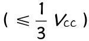
时，电路翻转为暂稳态， U o =1 ，放电端（⑦脚）截止，电源经R向C充电。当C上电压达到
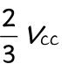
时，电路再次翻转恢复到稳态，暂稳态结束，U o =0，放电端（⑦脚）导通，将 C 上电压放掉，直至下一次触发。综上所述，单稳态工作模式下，电路由负触发脉冲触发，输出为一正矩形脉冲，脉宽T W ≈1.1RC，调节R、C可调节单稳态输出脉宽。工作波形如图9-21所示。
2．无稳态工作模式
无稳态工作模式可构成多谐振荡器，也是较常用的工作模式，典型电路如图 9-22 所示。时基集成电路的置“1”端（②脚）和置“0”端（⑥脚）并接在一起，R 1 、R 2 和C组成充放电回路。
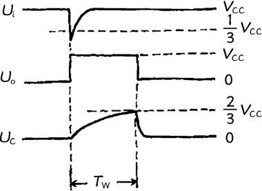
图9-21 单稳态电路工作波形
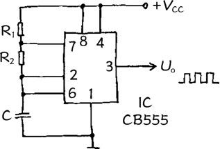
图9-22 多谐振荡器电路
刚接通电源时，C上无电压，输出端（③脚）U o =1，放电端（⑦脚）截止，电源开始经 R 1 、R 2 向 C 充电，充电时间 T 1 ≈0.7 （R 1 +R 2 ）C。
当C上电压达到
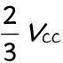
时，电路翻转，U o 变为“0”，⑦脚导通到地，C开始经R 2 放电，放电时间T 2 ≈0.7R 2 C。当C上电压放电至
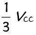
时，电路再次翻转，U o 又变为“1”⑦脚截止，C开始新一轮充电。如此周而复始即形成自激振荡，振荡周期 T=T 1 +T≈0.7 （R 1 +2R 2 ）C，时基集成电路③脚的输出为连续方波，工作波形如图9-23所示。
3．双稳态工作模式
双稳态工作模式电路如图9-24所示。在时基集成电路的置“1”端（②脚）和置“0”端（⑥脚）分别接有 C 1 和 R 1 、C 2 和R 2 构成的触发微分电路。双稳态工作模式电路具有RS触发器特性，⑥脚和②脚分别相当于R和S两个触发端，但其触发脉冲的极性相反。
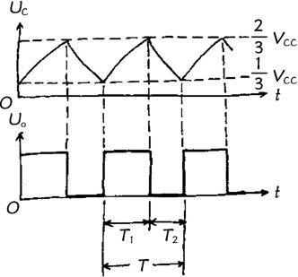
图9-23 多谐振荡器工作波形
图9-24 双稳态电路
当有负触发脉冲 加至时基集成电路②脚时，电路被置“1”，输出端（③脚）U o =1。
当有正触发脉冲 加至时基集成电路⑥脚时，电路被置“0”，输出端（③脚）U o =0。电路工作波形如图9-25所示。
4．施密特工作模式
施密特工作模式下，时基集成电路构成施密特触发器，是常用的波形整形电路。如图9-26所示，时基集成电路的置“1”端（②脚）和置“0”端（⑥脚）并接在一起作为施密特触发器输入端。
图9-25 双稳态电路工作波形
当输入信号 时，输出信号（③脚）U o =0。
当输入信号 时，输出信号（③脚）U o =1。
施密特触发器可以将缓慢变化的模拟信号整形为边沿陡峭的数字信号，输出信号U o 与输入信号U i 相位相反，其工作波形如图9-27所示。
图9-26 施密特触发器电路
图9-27 施密特触发器工作波形
时基集成电路的主要作用是定时、振荡和整形，广泛应用在延时、定时、多谐振荡、脉冲检测、波形发生、波形整形、电平转换和自动控制等领域。
1．延时
图9-28所示为自动延时关灯电路。时基集成电路工作于单稳态触发器模式，C 1 、R 为定时元件，SB 为触发按钮。使用时按一下SB，照明灯EL点亮，延时约25s后自动关灯。改变C 1 、R的大小可调节延时时间。
2．定时
图9-29所示为定时电路。时基集成电路工作于单稳态触发器模式，C 1 、R为定时元件，SB为触发按钮。每按一下SB，电路将输出一定时间的高电平。定时时间T= 1.1C 1 R，可根据需要调节C 1 、R的大小确定。
图9-28 延时电路
图9-29 定时电路
3．超长延时
图9-30所示为时基集成电路构成的超长延时电路，可提供1h 以上的延时时间。电路由 4 级时基集成电路单稳态触发器串联构成。
图9-30 超长延时电路
每一级单稳态触发器受上一级定时结束的下降沿触发，并在本级定时结束时触发下一级单稳态触发器。4级单稳态触发器的输出端经或门 D 1 后作为延时输出，总的延时时间为各单稳态触发器定时时间之和。如各级定时元件R、C的大小相同，则总延时时间T=1.1nRC，式中，n为单稳态触发器的级数。图9-30所示电路中，n=4。
4．多谐振荡
图9-31所示为可调脉冲信号发生器电路。时基集成电路工作于无稳态模式，RP 2 为频率调节电位器，RP 1 为占空比调节电位器。电路可输出 100Hz～10kHz 的方波信号，其占空比可在5%～95%之间调节。该电路具有两个输出端，OUT 1 输出脉冲方波，OUT 2 输出交流方波。
图9-31 可调脉冲信号发生器
5．压控振荡
图9-32所示为压控振荡器电路。集成运放IC 1 构成积分器，时基集成电路IC 2 工作于单稳态触发器模式。U i 为控制电压，可在 0～10V 之间变化。电路振荡频率 f 0 受 U i 控制，
图9-32 压控振荡器
6．整形
图9-33所示为光控电路，时基集成电路工作于施密特触发器模式，完成整形任务。光电三极管VT检测到的缓慢变化的光信号，被整形为边沿陡峭的脉冲信号输出，使触发器翻转完成控制动作。
图9-33 光控整形电路
7．电平转换
使时基集成电路工作于双稳态触发器模式，利用其放电端（⑦脚）连接不同电压，可以构成各种电平转换电路。图 9-34所示为CMOS到TTL的电平转换电路，图9-35所示为CMOS到TTL的反相电平转换电路。
图9-34 电平转换电路（一）
图9-35 反相电平转换电路（一）
图9-36 所示为TTL 到CMOS 的电平转换电路，图9-37所示为TTL到CMOS的反相电平转换电路。
图9-36 电平转换电路（二）
图9-37 反相电平转换电路（二）
9.3 集成稳压器
要点提示
集成稳压器是指将不稳定的直流电压变为稳定的直流电压的集成电路，包括线性稳压器、开关稳压器、电压变换器和电压基准源等。
集成稳压器的文字符号为“IC”。
集成稳压器的参数主要有输出电压、最大输出电流、最小输入输出压差、最大输入电压和最大耗散功率等。
串联式稳压器具有电压调整率高、负载能力强、纹波抑制能力强、电路结构简单的特点，绝大多数集成稳压器都是串联式稳压器。
集成稳压器的主要作用是稳压，还可以用作恒流源。
集成稳压器是指将不稳定的直流电压变为稳定的直流电压的集成电路，具有稳压精度高、工作稳定可靠、外围电路简单、体积小、重量轻等显著特点，在各种电源电路中得到了越来越普遍的应用。
集成稳压器包括线性稳压器、开关稳压器、电压变换器和电压基准源等，应用最广泛的是串联式集成稳压器。常见的集成稳压器有金属圆形封装、金属菱形封装、塑料封装、带散热板塑封、扁平式封装、单列直插式封装和双列直插式封装等多种形式，如图9-38所示。
图9-38 集成稳压器
集成稳压器种类较多，按输出电压的正负可分为正输出稳压器、负输出稳压器和正负对称输出稳压器；按输出电压是否可调可分为固定输出稳压器和可调输出稳压器，固定输出稳压器具有多种输出电压规格；按引脚数可分为三端稳压器和多端稳压器。
在电子制作中应用较多的是三端固定输出稳压器。
集成稳压器的文字符号采用集成电路的通用符号“IC”，图形符号如图9-39所示。
图9-39 集成稳压器的图形符号
集成稳压器的参数包括极限参数和工作参数两方面，一般应用时，关注其输出电压 U o 、最大输出电流 I om 、最小输入输出压差、最大输入电压U im 和最大耗散功率P m 等主要参数即可。
1．输出电压
输出电压 U o 是指集成稳压器的额定输出电压。对于固定输出的稳压器，U o 是一个固定值；对于可调输出的稳压器，U o 是一个电压范围。
2．最大输出电流
最大输出电流 I om 是指集成稳压器在安全工作的条件下所能提供的最大输出电流。应选用 I om 大于（至少等于）电路工作电流的稳压器，并按要求安装足够的散热板。
3．最小输入/输出压差
最小输入/输出压差是指集成稳压器正常工作所必需的输入端与输出端之间的最小电压差值。这是因为调整管必须承受一定的管压降，才能保证输出电压 U o 的稳定，否则，稳压器不能正常工作。
4．最大输入电压
最大输入电压U im 是指在安全工作的前提下，集成稳压器所能承受的最大输入电压值。如果输入电压超过 U im ，将会损坏集成稳压器。对于可调输出集成稳压器，往往用最大输入/输出压差来表示此项极限参数。
5．最大耗散功率
最大耗散功率 P m 是指集成稳压器内部电路所能承受的最大功耗，P m =（U i -U o ）×I o ，使用时不得超过P m ，以免损坏集成稳压器。
集成稳压器分为串联式、并联式和开关式稳压器三大类。
1．串联式集成稳压器
串联式集成稳压器的特点是调整管与负载串联并工作在线性区域。
图 9-40 所示为应用最广泛的串联式集成稳压器内部电路方框图。其工作原理是：采样电路将输出电压U o 按比例取出，送入比较放大器与基准电压进行比较，差值被放大后去控制调整管，使调整管管压降作反方向变化，最终使输出电压U o 保持稳定。
图9-40 串联式集成稳压器内部电路方框图
串联式集成稳压器电压调整率高，负载能力强，纹波抑制能力强，电路结构简单，绝大多数集成稳压器都是串联式集成稳压器。
2．并联式集成稳压器
并联式集成稳压器的特点是调整管与负载并联并工作在线性区域。
图 9-41 所示为并联式集成稳压器内部电路方框图。其工作原理是：采样电路将输出电压U o 按比例取出，送入比较放大器与基准电压进行比较，差值被放大后去控制调整管，使调整管分流比例作反方向变化，最终使输出电压 U o 保持稳定。
图9-41 并联式集成稳压器内部电路方框图
并联式集成稳压器负载短路能力强，但电压、电流调整率差，通常作为电流源运用。
3．开关式集成稳压器
开关式集成稳压器的特点是调整管工作于开关状态，因此效率高，自身功耗低。其缺点是输出电压精度较差，纹波系数和噪声较大。
开关式集成稳压器可分为自激串联控制式、自激并联控制式、他激脉宽控制式、他激频率控制式、他激脉宽和频率控制式等。
（1）自激串联控制式稳压电路原理如图9-42所示。开关管与负载串联，开关管输出的脉动电压经滤波器滤波为直流电压输出。电压比较器根据输出电压的变化调节开关管的导通、截止比例，使输出电压U o 保持稳定。
（2）自激并联控制式稳压电路原理如图9-43所示。开关管与负载并联，对输出电压作开关式分流调整。电压比较器根据输出电压的变化调节开关管的导通、截止比例，使输出电压 U o 保持稳定。
图9-42 自激串联控制式稳压电路原理
图9-43 自激并联控制式稳压电路原理
（3）他激脉宽控制式稳压电路原理如图9-44所示。开关管与负载串联，开关管输出的脉动电压经滤波器滤波为直流电压输出。在脉宽控制式稳压电路中，开关管的开关频率不变，采样信号通过脉宽控制器调节开关管的占空比，从而达到调节输出电压、使输出电压 U o 保持稳定的目的。
图9-44 他激脉宽控制式稳压电路原理
（4）他激频率控制式稳压电路原理如图9-45所示。开关管的导通时间固定，采样信号通过频率控制器调节开关管的开关频率，即改变截止时间，以达到调节输出电压、使输出电压U o 保持稳定的目的。
图9-45 他激频率控制式稳压电路原理
（5）他激脉宽和频率控制式稳压电路原理如图9-46所示。采样信号通过脉宽控制器和振荡器，同时调节开关管的占空比和频率，即同时调节开关管的导通时间和截止时间，来稳定输出电压，使输出电压U o 保持稳定。
图9-46 他激脉宽和频率控制式稳压电路原理
集成稳压器的主要作用是稳压，还可以用作恒流源。
1．固定正稳压
图 9-47 所示为输出+9V 直流电压的稳压电源电路，IC 采用集成稳压器7809，C 1 、C 2 分别为输入端和输出端滤波电容， R L 为负载电阻。
图9-47 ＋9V稳压电路
2．固定负稳压
图 9-48 所示为输出-9V 直流电压的稳压电源电路，IC 采用集成稳压器7909。
图9-48 −9V稳压电路
3．正负对称固定稳压
图 9-49 所示为±15V 稳压电源电路，IC 1 采用固定正输出集成稳压器7815，IC 2 采用固定负输出集成稳压器7915。VD 1 、VD 2 为保护二极管，用以防止正或负输入电压有一路未接入时损坏集成稳压器。
图9-49 ±15V稳压电路
4．可调正稳压
图9-50所示为采用CW117组成的输出电压可连续调节的稳压电源电路，输出电压可调范围为+1.2～+37V。R 1 与 RP 组成调压电阻网络，调节电位器RP即可改变输出电压。RP动臂向上移动时输出电压增大，向下移动时输出电压减小。
图9-50 可调正输出稳压电路
5．可调负稳压
图9-51所示为采用CW137组成的输出电压可连续调节的稳压电源电路，输出电压可调范围为−37～−1.2V。RP为输出电压调节电位器，RP 动臂向上移动时输出负电压的绝对值增大，向下移动时输出负电压的绝对值减小。
图9-51 可调负输出稳压电路
6．软启动稳压电源
图9-52所示为应用CW117组成的软启动稳压电源电路。刚接通输入电源时，C 2 上无电压，VT 导通将 RP 短路，稳压电源输出电压U o =1.2V。随着C 2 的充电，VT逐渐退出导通状态，U o 逐步上升，直至C 2 充电结束，VT截止，U o 达最大值。启动时间的长短由R 1 、R 2 和C 2 的大小决定。VD为C 2 提供放电通路。
7．恒流源
集成稳压器还可以用作恒流源。图9-53所示为7800稳压器构成的恒流源电路，其恒定电流I o 等于7800稳压器输出电压与R的比值。
图9-52 软启动稳压电源电路
图9-53 恒流源电路
9.4 数字集成电路
要点提示
数字集成电路是指传输和处理数字信号的集成电路，其特点是工作于开关状态，包括门电路、触发器、计数器、译码器和寄存器等。
数字集成电路的文字符号为“D”。
门电路是指能够实现各种基本逻辑关系的电路，包括与门、或门、非门、与非门、或非门等。门电路是构成组合逻辑电路的基本部件，也是构成时序逻辑电路的组成部件之一。
触发器是时序电路的基本单元，在数字信号的产生、变换、存储、控制等方面应用广泛，包括RS触发器、D触发器、JK触发器、单稳态触发器和施密特触发器等。
计数器的特点是具有记忆功能，是数字系统中应用最多的时序电路，分为同步计数器和异步计数器两大类。
译码器是一种组合电路，其功能是将一种数码转换成另一种数码，包括显示译码器和数码译码器两大类。
移位寄存器是一种时序电路，它不仅可以寄存数据，而且还具有移位的功能。
数字集成电路可以简称为数字电路，是指传输和处理数字信号的集成电路。数字信号在时间上和数值上都是不连续的，是断续变化的离散信号。数字信号往往采用二进制数表示，数字集成电路的工作状态则用“1”和“0”表示。数字集成电路的特点是工作于开关状态。数字集成电路基本上都采用双列直插式封装，如图9-54所示。
图9-54 数字集成电路
数字集成电路种类很多。按照功能不同，数字集成电路可分为门电路、触发器、计数器、译码器、寄存器、模拟开关、数据选择器以及运算电路等。数字集成电路的文字符号为“D”，图形符号如图9-55所示。
图9-55 数字集成电路的图形符号
能够实现各种基本逻辑关系的电路通称为门电路。门电路是构成组合逻辑网络的基本部件，也是构成时序逻辑电路的组成部件之一。门电路可用逻辑代数进行分析。
基本门电路包括与门、或门、非门、与非门、或非门等。
1．与门
与门的图形符号如图9-56所示，A、B为输入端，Y为输出端。与门的逻辑关系为 Y=AB，即只有当所有输入端 A 和 B均为“1”时，输出端Y才为“1”；否则Y为“0”。与门可以有更多的输入端。
2．或门
或门的图形符号如图9-57所示，A、B为输入端，Y为输出端。或门的逻辑关系为Y=A+B，即只要输入端A和B中有一个为“1”时，Y即为“1”；所有输入端A和B均为“0”时，Y才为“0”。或门可以有更多的输入端。
图9-56 与门的图形符号
图9-57 或门的图形符号
3．非门
非门的图形符号如图9-58所示。非门又叫反相器，A为输入端，Y为输出端，其逻辑关系为 即输出端Y总是与输入端A相反。
图9-58 非门的图形符号
4．与非门
与非门的图形符号如图9-59所示，A、B为输入端，Y为输出端。与非门的逻辑关系为 ，即只有当所有输入端A和B均为“1”时，输出端Y才为“0”；否则Y为“1”。与非门可以有更多的输入端。
5．或非门
或非门的图形符号如图9-60所示，A、B为输入端，Y为输出端。或非门的逻辑关系为 ，即只要输入端A和B中有一个为“1”时，Y即为“0”；所有输入端A和B均为“0”时，Y才为“1”。或非门可以有更多的输入端。
图9-59 与非门的图形符号
图9-60 或非门的图形符号
6．门电路的应用
门电路具有广泛的用途，最主要的是用于逻辑控制，以及组成振荡器、触发器等，还可以用作模拟放大器。
（1）逻辑控制。图 9-61 所示为声光控路灯电路，由非门D 1 、与门 D 2 实现逻辑控制。夜晚无强环境光时，环境光检测电路输出为“0”，经D 1 反相后为“1”，打开与门D 2 。这时如有行人的脚步声，声音检测电路输出为“1”。由于与门 D 2 的两个输入端都为“1”，因此，D 2 输出为“1”，使晶体管VT导通，继电器吸合，路灯自动点亮。白天环境光较强时，D 1 输出为“0”，关闭了与门D 2 ，即使有脚步声路灯也不会点亮。
图9-61 声光控路灯电路
（2）多谐振荡器。图9-62所示为占空比可调的多谐振荡器电路，由两个非门 D 1 、D 2 等组成，电位器 RP 1 和 RP 2 用于调节占空比。由于二极管VD 1 和VD 2 的存在，调节RP 1 时只改变电容C的充电时间，即只改变输出方波高电平的宽度；调节RP 2 时只改变电容C的放电时间，即只改变输出方波低电平的宽度。
（3）触发器。图9-63所示为或非门构成的RS触发器电路，由两个或非门D 1 、D 2 交叉耦合而成。RS触发器具有两个触发输入端：R为置“0”输入端，S为置“1”输入端，“1”电平触发有效；具有两个输出端：Q为原码输出端， 为反码输出端。
图9-62 占空比可调的多谐振荡器电路
图9-63 或非门构成的RS触发器电路
当R=1、S=0时，触发器被置“0”，Q=0、Q=1。当R=0、S=1时，触发器被置“1”，Q=1、Q=0。当R=0、S=0时，触发器输出状态保持不变。当R=1、S=1时，下一状态不确定，应避免使触发器出现这种状态。
（4）模拟放大器。门电路还可以用作模拟放大器。图9-64所示为门电路构成的模拟电压放大电路，它由3个非门D 1 、D 2 、D 3 串接而成。R 2 为反馈偏置电阻，将 3 个非门的工作点偏置在 附近。R 1 为输入电阻。电路放大倍数 ，按图中参数放大倍数A=100倍。
图9-64 门电路构成的模拟电压放大电路
触发器是时序电路的基本单元，在数字信号的产生、变换、存储、控制等方面应用广泛。按结构和工作方式不同，触发器可分为RS触发器、D触发器、JK触发器、单稳态触发器和施密特触发器等。
1．RS触发器
RS触发器即复位-置位触发器，是最简单的基本触发器，也是构成其他复杂结构触发器的组成部分之一。RS 触发器的图形符号如图9-65所示。
图9-65 RS触发器的图形符号
RS 触发器具有两个输入端：置“1”输入端 S、置“0”输入端R；具有两个输出端：输出端Q和反相输出端Q。表9-4所示为RS触发器真值表。
表9-4 RS触发器真值表
RS触发器的特点是，电路具有两个稳定状态：Q=1或Q=0。R输入端只能使触发器处于Q=0的状态，S输入端只能使触发器处于Q=1的状态。
2．RS触发器的应用
RS触发器常用于单脉冲产生、状态控制等电路中。
图9-66所示为RS触发器构成的触摸开关电路，“开”和“关”为两对金属触摸触点。当用手触摸“开”触点时，人体电阻将触点接通，电源电压+V CC 加至S端，使触发器置“1”，输出端Q=1，晶体管VT导通，继电器K吸合，电灯EL点亮。当用手触摸“关”触点时，电源电压+V CC 加至R端，使触发器置“0”，晶体管VT截止，继电器释放，电灯熄灭。
图9-66 触摸开关电路
3．D触发器
D触发器又称延迟触发器，具有数据输入端D、时钟输入端CP、输出端Q和反相输出端 ，其图形符号如图9-67所示。
图9-67 D触发器的图形符号
D触发器输出状态的改变依赖于时钟脉冲CP的触发，即在时钟脉冲边沿的触发下，数据由输入端D传输到输出端Q。图9-67 （a）所示为CP上升沿触发的D触发器，图9-67（b）所示为CP下降沿触发的D触发器，其真值表分别见表9-5和表9-6。
表9-5 上升沿触发D触发器真值表
表9-6 下降沿触发D触发器真值表
D触发器的特点是，只有在时钟脉冲边沿的触发下，数据才得以传输而进入触发器，没有触发信号时触发器中的数据则保持不变。
4．D触发器的应用
D触发器常用于数据锁存、计数、分频等电路中。
图9-68所示为D触发器构成的3级分频电路。每个D触发器的反相输出端 与自身的数据输入端D相连接，构成2分频单元。3级2分频单元串接可实现8分频电路。增加串接的分频单元的数量，即可相应增大分频比，n级2分频单元串接可实现2 n 分频。
图9-68 3级分频电路
5．单稳态触发器
图9-69 单稳态触发器的图形符号
单稳态触发器图形符号如图9-69 所示。单稳态触发器一般具有两个触发端：上升沿触发端TR + 和下降沿触发端 ；具有两个输出端：Q端和 端，其输出信号互为反相。另外还具有清零端 接电，外接电阻端R e ，外容端C e 。
在单稳态触发器 TR 端输入一个触发脉冲，其输出端即输出一个恒定宽度的矩形脉冲，该矩形脉冲的宽度由外接定时元件 R e 和 C e 的大小决定。表 9-7 所示为单稳态触发器真值表。
表9-7 单稳态触发器真值表
单稳态触发器的特点是，具有两个输出状态：稳态和暂稳态。稳态时输出端Q=0。在输入脉冲的触发下，电路翻转为暂稳态， Q=1，经过一定时间后又自动恢复到Q=0的稳态。
6．单稳态触发器的应用
单稳态触发器主要应用于脉冲信号展宽、整形、延迟电路，以及定时器、振荡器、数字滤波器、频率/电压变换器等。
图9-70所示为单稳态触发器构成的100ms定时器电路，采用TR + 输入端触发，每按下一次SB，输出端Q便输出一个宽度为 100ms 的高电平信号。输出脉宽 T w 由 R 1 和 C决定， T w =0.69R 1 C。改变定时元件R 1 和C的大小，即可改变定时时间。
图9-70 定时器电路
7．施密特触发器
施密特触发器图形符号如图9-71所示，其中图9-71（a）所示为同相输出型施密特触发器，图9-71（b）所示为反相输出型施密特触发器。
施密特触发器具有一个输入端 A，一个输出端 Q 或Q。施密特触发器具有滞后电压特性，即当输入电压上升到正向阈值电压U T+ 时，触发器翻转；当输入电压下降到负向阈值电压U T− 时，触发器再次翻转。滞后电压ΔU T =U T+ －U T− 。图9-72所示为施密特触发器波形图。
图9-71 施密特触发器的图形符号
图9-72 施密特触发器波形
施密特触发器的特点是，可将缓慢变化的电压信号转变为边沿陡峭的矩形脉冲。
8．施密特触发器的应用
施密特触发器常用于脉冲整形、电压幅度鉴别、模/数转换、多谐振荡器以及接口电路等。
图9-73所示为光控电路，施密特触发器在其中起整形作用。光线的缓慢变化由光电三极管VT接收并转换为电信号，施密特触发器将缓慢变化的电信号整形成为边沿陡峭的脉冲信号输出。
图9-73 光控整形电路
无光照时，光电三极管 VT截止，施密特触发器输出端 U o =0。当有光照射到光电三极管VT时，VT导通，使施密特触发器输入端为“0”，其输出端U o =1。
计数器是数字系统中应用最多的时序电路。计数器是一个记忆装置，它能对输入的脉冲按一定的规则进行计数，并由输出端的不同状态予以表示。
图9-74所示为无预置数输入端计数器的一般图形符号，CP为串行数据输入端，Q 1 ～Q n 为输出端。
图9-75所示为有预置数输入端（并行数据输入端）计数器的一般图形符号，CP为串行数据输入端（计数输入端），P 1 ～P n 为并行数据输入端（预置数端），Q 1 ～Q n 为输出端。
图9-74 无预置数输入端计数器的图形符号
图9-75 有预置数输入端计数器的图形符号
计数器种类繁多，通常分为同步计数器和异步计数器两大类，按操作码制可分为二进制码计数器、BCD码（二-十进制）计数器、八进制和十进制约翰逊码计数器等，按功能可分为加计数器、减计数器、加/减计数器、可预置计数器、可编程计数器、计数分配器等。
计数器主要应用于计数、分频、定时、脉冲分配等电路。
1．计数
计数器可以构成加法计数器、减法计数器、加/减两用计数器等。图9-76所示为8位二进制加法计数器电路，由两块4位集成计数器CC4520串行级联而成，计数信号由D 1 的CP端输入，计数结果由8位二进制码表示，最大计数值为2 8 −1=255。SB为清零按钮。
图9-76 加法计数器
2．分频
计数器可用作各种类型的分频器。图 9-77 所示为 分频器电路。电路由二进制异步计数器CC4024（D 1 ），非门D 2 ，与非门D 3 、D 4 ，或非门D 5 、D 7 ，D型触发器D 6 等组成。当输入第60个计数脉冲时，D型触发器D 6 输出为高电平，第60个计数脉冲的下降沿经或非门D 7 形成复位脉冲，加至CC4024清零端使其清零复位，实现 分频。
图9-77 分频器
3．定时
图9-78所示为采用14位二进制计数器CC4060构成的多路定时器电路，具有 10 个输出端（Q 4 ～Q 10 、Q 12 ～Q 14 ），可同时输出10种定时时间，以分别控制10个负载。CC4060内部包含多谐振荡器和14级二分频器。
图9-78 定时器
多谐振荡器的作用是产生时钟脉冲，电路的基本定时时间T等于一个时钟脉冲周期，调节外接定时元件R 1 或C即可改变基本定时时间。
10个输出端的定时时间分别为基本定时时间T的2 n 倍，最小为2 4 T（16T），最大为2 14 T（16384T）。如果取R 1 =68kΩ、C=6.8μF，则T=2.2R 1 C≈1s，那么电路最小定时时间为 16s，最大定时时间可达4h30mim以上。定时时间到时，相应的输出端输出一个“1”信号。
4．脉冲分配
图 9-79 所示为采用 CC4017 构成的十进制计数分配器电路，可对脉冲信号进行分配。脉冲信号由CP端输入，“1”信号依次出现在Y 0 ～Y 9 这10个输出端上，实现了对脉冲信号的十进制分配。SB为清零按钮。
图9-79 脉冲分配器
5．秒脉冲发生器
图9-80所示为采用CD4060构成的石英晶体秒脉冲发生器。CD4060 内含振荡器。由其制作秒脉冲发生器具有电路简洁、工作可靠、成本低、精度高的特点。CD4060的⑩脚和 晶体元件脚的内部门电路与外接的等构成典型的晶体振荡器，振荡频率由晶体 B 决定（32768Hz），调节C 2 可微调振荡频率。32768Hz的振荡信号由 CD4060 内部的 14 级二进制分频器分频后，从③脚输出2Hz脉冲信号，再由D进行一次二分频，即得到1Hz的标准秒脉冲信号。
图9-80 秒脉冲发生器
译码器是一种组合电路，其功能是将一种数码转换成另一种数码。译码器的输出状态是其输入信号各种组合的结果，用以控制后续电路，或者驱动显示器实现数码的显示。译码器可分为显示译码器和数码译码器两大类。
1．显示译码器
显示译码器的特点是将输入信号译码后直接驱动显示器件显示出字符来。
图9-81所示为BCD码-7段显示译码器图形符号。A、B、C、D为4个BCD码输入端；a～g为7个输出端，分别控制7段数码管的7个笔画。当输入4位BCD码时，相应的输出端便会驱动7段数码管显示出该4位BCD码所代表的十进制数字。
图9-82所示为十进制计数-7段显示译码器图形符号。CP为脉冲信号输入端，R为清零端；a～g为7个输出端。当CP端有脉冲信号输入时，电路便对其计数，并将计数结果通过7个输出端驱动7段数码管显示。
图9-81 BCD码-7 段显示译码器的图形符号
图9-82 十进制计数-7段显示译码器的图形符号
2．显示译码器的应用
图9-83所示为采用十进制计数-7段译码器CD4033等构成的六进制计数显示电路。D型触发器D 1 和与非门D 2 ～D 4 构成附加控制电路。
图9-83 六进制计数显示电路
CD4033对1～5个脉冲正常计数，当第6个脉冲到来时，附加控制电路（D 4 的⑩脚）输出一个“1”脉冲，使CD4033计数器复位为“0”，同时送出一个进位脉冲。下一个脉冲到来时，计数器重新开始计数。六进制计数器可用于分、秒的十位计数。
3．数码译码器
数码译码器的特点是能够将一种数码转换为另一种数码。图 9-84 所示为数码译码器图形符号。它具有若干个输入端（A、B、…n）和若干个输出端（Y 1 、Y 2 、…Y n ），一种数码从输入端输入，从输出端即可得到另一种数码。
图9-84 数码译码器的图形符号
4．数码译码器的应用
数码译码器的作用是进行数码转换。
图9-85所示为采用CC4028的BCD码-十进制码译码器。输入信号为4位BCD码，从A、B、C、D4个输入端输入，输出信号则是十进制码（Y 0 ～Y 9 依次为“1”）。
图9-85 BCD码-十进制码译码器
由于4位BCD码具有16种状态，而表示十进制数只需要前10 种状态，因此后6 种状态称为“伪码”。CC4028 的逻辑设计采用拒绝伪码方案，当输入代码为“1010”～“1111”时，所有输出端均为“0”。利用CC4028输入端中的A、B、C3位二进制输入，可得到八进制码输出。
移位寄存器是一种时序电路，它不仅可以寄存数据，而且还具有移位的功能，即移位寄存器里存储的数据，可以在时钟脉冲的作用下逐步右移或左移。移位寄存器是数字系统和电子计算机中的一个重要部件，在数据寄存、传送、延迟、串/并行数据转换或并/串行数据转换等方面应用广泛。
1．右移移位寄存器
图9-86所示为4位右移移位寄存器原理示意图。串行数据从D端输入，在时钟脉冲CP的作用下逐步向右移位，经过4个CP周期后从 Q 4 端串行输出。Q 1 ～Q 4 为并行数据输出端。P 1 ～P 4 为并行数据输入端。
图9-86 4位右移移位寄存器原理
2．左移移位寄存器
图9-87所示为4位左移移位寄存器原理示意图。串行数据从D端输入，在时钟脉冲CP的作用下逐步向左移位，经过4个CP周期后从 Q 1 端串行输出。Q 1 ～Q 4 为并行数据输出端。P 1 ～P 4 为并行数据输入端，
图9-87 4位左移移位寄存器原理
3．移位寄存器的应用
移位寄存器的主要作用是数据寄存移位、串/并行数据转换、并/串行数据转换和脉冲序列发生等。
图9-88所示为彩灯控制器电路，采用了两块4位静态移位寄存器CC4035，其8个寄存单元连接成环形，8个输出端可控制8路彩灯。
图9-88 彩灯控制器电路
彩灯的初始状态由预置数开关S 1 ～S 8 设置，开关闭合为“1”、断开为“0”。按下送数按钮SB时预置数进入移位寄存器，Q 1 ～Q 8 的输出等于P 1 ～P 8 的输入。松开SB后，移位寄存器各单元的数据便在时钟脉冲的作用下周而复始地向右移动，由Q 1 ～Q 8 控制的彩灯也就流动起来。非门 D 1 、D 2 等构成多谐振荡器，为移位寄存器提供时钟脉冲。调节电阻 R 11 可改变振荡频率，即调节了彩灯的流动速度。
图书在版编目（CIP）数据
手绘图说电子元器件/门宏编著.--北京：人民邮电出版社，2013.1
（手绘图说系列）
ISBN 978-7-115-29298-8
Ⅰ.①手… Ⅱ.①门… Ⅲ.①电子元件—图解②电子器件—图解 Ⅳ.①TN6-64②TN103-64
中国版本图书馆CIP数据核字（2012）第202118号
内容提要
本书是“手绘图说系列”丛书中的一本，采用手绘图和口语化文字，为您讲解电阻器、电容器、电感器、半导体器件、集成电路等各种电子元器件的基本知识，包括其种类、符号、参数、特点与工作原理，并通过实例解读各种电子元器件的用途。本书将带给您身临其境、耳濡目染的感受，帮助您加深理解，收到良好的学习效果。
本书适合电子技术爱好者、家电维修人员和相关从业人员阅读学习，并可作为职业技术学校和务工人员上岗培训的基础教材。
手绘图说系列
手绘图说电子元器件
◆编著 门宏
责任编辑 王朝辉
◆人民邮电出版社出版发行 北京市崇文区夕照寺街14号
邮编 100061 电子邮件 315@ptpress.com.cn
网址 http://www.ptpress.com.cn
三河市海波印务有限公司印刷
◆开本：850×1168 1/32
印张：8.25
字数：191千字 2013年1月第1版
印数：1- 4000册 2013年1月河北第1次印刷
ISBN 978-7-115-29298-8
定价：25.00元
读者服务热线：(010)67132692 印装质量热线：(010)67129223
反盗版热线：(010)67171154
广告经营许可证：京崇工商广字第0021号
Table of Contents
1.1 电阻器
1.1.1 电阻器的种类
1.1.2 电阻器的符号
1.1.3 电阻器的型号
1.1.4 电阻器的参数
1.1.5 电阻器的特点与工作原理
1.1.6 电阻器的作用
1.1.7 常用电阻器
1.2 敏感电阻器
1.2.1 敏感电阻器的种类
1.2.2 敏感电阻器的型号
1.2.3 压敏电阻器
1.2.4 热敏电阻器
1.2.5 光敏电阻器
1.3 电位器
1.3.1 电位器的种类
1.3.2 电位器的符号
1.3.3 电位器的型号
1.3.4 电位器的参数
1.3.5 电位器的特点与工作原理
1.3.6 电位器的作用
1.3.7 常用电位器
2.1 固定电容器
2.1.1 电容器的种类
2.1.2 电容器的符号
2.1.3 电容器的型号
2.1.4 电容器的参数
2.1.5 电容器的特点与工作原理
2.1.6 电容器的作用
2.1.7 常用电容器
2.2 可变电容器
2.2.1 可变电容器的种类
2.2.2 可变电容器的符号
2.2.3 可变电容器的结构
2.2.4 可变电容器的参数
2.2.5 可变电容器的特点与工作原理
2.2.6 可变电容器的作用
2.2.7 常用可变电容器
3.1 电感器
3.1.1 电感器的种类
3.1.2 电感器的符号
3.1.3 电感器的型号
3.1.4 电感器的参数
3.1.5 电感器的特点与工作原理
3.1.6 电感器的作用
3.1.7 常用电感器
3.2 变压器
3.2.1 变压器的种类
3.2.2 变压器的符号
3.2.3 变压器的特点与工作原理
3.2.4 变压器的基本作用
3.2.5 电源变压器
3.2.6 音频变压器
3.2.7 中频变压器
3.2.8 高频变压器
4.1 扬声器
4.1.1 扬声器的种类
4.1.2 扬声器的符号
4.1.3 扬声器的型号
4.1.4 扬声器的参数
4.1.5 电动式扬声器
4.1.6 压电式扬声器
4.1.7 球顶式扬声器
4.1.8 号筒式扬声器
4.2 耳机
4.2.1 耳机的种类
4.2.2 耳机的符号
4.2.3 耳机的型号
4.2.4 耳机的参数
4.2.5 单声道耳机
4.2.6 双声道耳机
4.3 电磁讯响器
4.3.1 电磁讯响器的种类
4.3.2 电磁讯响器的符号
4.3.3 电磁讯响器的参数
4.3.4 电磁讯响器的特点
4.3.5 不带音源讯响器
4.3.6 自带音源讯响器
4.4 压电蜂鸣器
4.4.1 压电蜂鸣器的符号
4.4.2 压电蜂鸣器的工作原理
4.4.3 压电蜂鸣器的特点
4.4.4 压电蜂鸣器的作用
4.5 传声器
4.5.1 传声器的种类
4.5.2 传声器的符号
4.5.3 传声器的型号
4.5.4 传声器的参数
4.5.5 动圈式传声器
4.5.6 驻极体传声器
4.5.7 近讲传声器
4.5.8 无线传声器
4.6 晶体
4.6.1 晶体的种类
4.6.2 晶体的符号
4.6.3 晶体的型号
4.6.4 晶体的参数
4.6.5 晶体的特点
4.6.6 晶体的作用
5.1 继电器
5.1.1 继电器的种类
5.1.2 继电器的符号
5.1.3 继电器的型号
5.1.4 继电器的参数
5.1.5 继电器的作用
5.1.6 电磁继电器
5.1.7 干簧继电器
5.1.8 固态继电器
5.1.9 时间继电器
5.1.10 热继电器
5.2 开关
5.2.1 开关的种类
5.2.2 开关的符号
5.2.3 开关的参数
5.2.4 拨动开关
5.2.5 旋转开关
5.2.6 按钮开关
5.2.7 微动开关和轻触开关
5.2.8 薄膜开关
5.3 接插件
5.3.1 接插件的种类
5.3.2 接插件的符号
5.3.3 常用接插件
5.4 保险器件
5.4.1 保险器件的种类
5.4.2 保险器件的符号
5.4.3 保险器件的参数
5.4.4 保险器件的工作原理
5.4.5 常用保险器件
6.1 晶体二极管
6.1.1 晶体二极管的种类
6.1.2 晶体二极管的符号
6.1.3 晶体二极管的型号
6.1.4 晶体二极管的极性
6.1.5 晶体二极管的参数
6.1.6 晶体二极管的特点与工作原理
6.1.7 晶体二极管的作用
6.1.8 检波二极管
6.1.9 整流二极管与整流桥堆
6.1.10 开关二极管
6.1.11 变容二极管
6.2 稳压二极管
6.2.1 稳压二极管的种类
6.2.2 稳压二极管的符号
6.2.3 稳压二极管的极性
6.2.4 稳压二极管的参数
6.2.5 稳压二极管的特点与工作原理
6.2.6 稳压二极管的作用
6.2.7 特殊稳压二极管
6.3 单结晶体管
6.3.1 单结晶体管的种类
6.3.2 单结晶体管的符号
6.3.3 单结晶体管的型号
6.3.4 单结晶体管的引脚
6.3.5 单结晶体管的参数
6.3.6 单结晶体管的特点与工作原理
6.3.7 单结晶体管的作用
7.1 晶体三极管
7.1.1 晶体三极管的种类
7.1.2 晶体三极管的符号
7.1.3 晶体三极管的型号
7.1.4 晶体三极管的引脚
7.1.5 晶体三极管的参数
7.1.6 晶体三极管的特点与工作原理
7.1.7 晶体三极管的作用
7.1.8 常用晶体三极管
7.1.9 特殊晶体三极管
7.2 场效应管
7.2.1 场效应管的种类
7.2.2 场效应管的符号
7.2.3 场效应管的引脚
7.2.4 场效应管的参数
7.2.5 场效应管的特点与工作原理
7.2.6 场效应管的作用
7.2.7 常用场效应管
7.3 晶闸管
7.3.1 晶闸管的种类
7.3.2 晶闸管的符号
7.3.3 晶闸管的型号
7.3.4 晶闸管的引脚
7.3.5 晶闸管的参数
7.3.6 晶闸管的特点
7.3.7 单向晶闸管
7.3.8 双向晶闸管
7.3.9 可关断晶闸管
8.1 光电二极管
8.1.1 光电二极管的种类
8.1.2 光电二极管的符号
8.1.3 光电二极管的型号
8.1.4 光电二极管的极性
8.1.5 光电二极管的参数
8.1.6 光电二极管的特点与工作原理
8.1.7 光电二极管的作用
8.2 光电三极管
8.2.1 光电三极管的种类
8.2.2 光电三极管的符号
8.2.3 光电三极管的型号
8.2.4 光电三极管的引脚
8.2.5 光电三极管的参数
8.2.6 光电三极管的特点与工作原理
8.2.7 光电三极管的作用
8.3 光电耦合器
8.3.1 光电耦合器的种类
8.3.2 光电耦合器的符号
8.3.3 光电耦合器的引脚
8.3.4 光电耦合器的参数
8.3.5 光电耦合器的特点
8.3.6 光电耦合器的作用
8.4 发光二极管
8.4.1 发光二极管的种类
8.4.2 发光二极管的符号
8.4.3 发光二极管的极性
8.4.4 发光二极管的参数
8.4.5 发光二极管的特点
8.4.6 发光二极管的作用
8.4.7 特殊发光二极管
8.5 LED数码管
8.5.1 LED 数码管的种类
8.5.2 LED 数码管的符号
8.5.3 LED 数码管的引脚
8.5.4 LED 数码管的特点与工作原理
8.5.5 LED 数码管的作用
9.1 集成运放
9.1.1 集成运放的种类
9.1.2 集成运放的符号
9.1.3 集成运放的参数
9.1.4 集成运放的电路结构
9.1.5 集成运放的工作原理
9.1.6 集成运放的应用
9.2 时基集成电路
9.2.1 时基集成电路的种类
9.2.2 时基集成电路的符号
9.2.3 时基集成电路的参数
9.2.4 时基集成电路的结构特点
9.2.5 时基集成电路的工作原理
9.2.6 时基集成电路的应用
9.3 集成稳压器
9.3.1 集成稳压器的种类
9.3.2 集成稳压器的符号
9.3.3 集成稳压器的参数
9.3.4 集成稳压器的工作原理
9.3.5 集成稳压器的应用
9.4 数字集成电路
9.4.1 门电路
9.4.2 触发器
9.4.3 计数器
9.4.4 译码器
9.4.5 移位寄存器